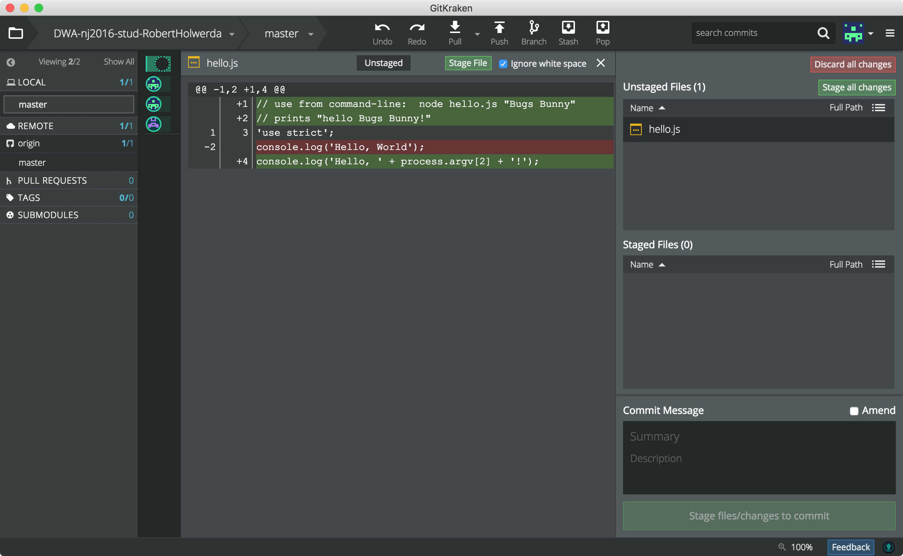
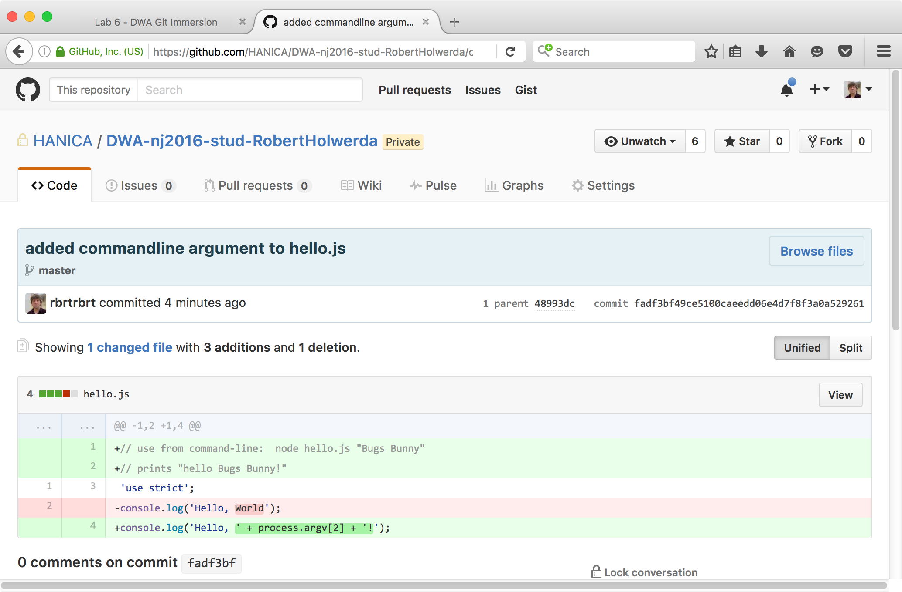

lab 6Changes and Diffs
Goals
- Learn how to inspect changes to files.
Change the “Hello, World” program. 01
It’s time to change our hello program to take an argument from the command line. Change the file to be:
File: hello.js
// use from command-line: node hello.js "Bugs Bunny"
// prints "hello Bugs Bunny!"
'use strict';
console.log('Hello, ' + process.argv[2] + '!');
There are three kinds of changes in this one little file:
- Two lines were added: The comment lines at the top.
- One line stayed the same: The "use strict" line.
- One line was changed: the "console.log" line.
Check the status in GitKraken 02
Switch to GitKraken and notice that it sees the change, by mentioning "hello.js" in the "Unstaged Files". You may need to select the WIP-line in the middle column to see the "Unstaged Files" box.
DO NOT COMMIT the changes yet!
Check the status in GitKraken 02
Click on the name of hello.js in the "Unstaged Files" box.
The middle column with the commit history becomes very small, to make room for a new panel that shows how the file has changed:
Green lines are lines that were added between the last commit and now.
Red lines are, of course, lines that were deleted.
Notice that a changed line is shown as a combination of a delete and an addition. This is usual for source code control systems, and Git is no exception.
See the same changes on Github 03
Bring the changes to Github:
- Commit the changes to the local repo.
- Push the commit to Github.
- Reload the repo-page on Github in your browser.
Notice that, on the Github page, the commit message next to 'hello.js' has been updated.
Now, click on the commit message next to 'hello.js' (i.e. not the file name!). Github shows the changes in a similar way.
Such a way of displaying the changes to a file, by highlighting the lines that were added or deleted, is called a 'diff'.